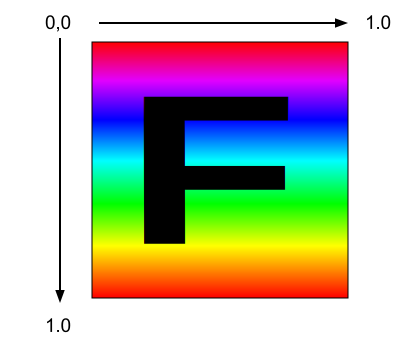

WebGL2 텍스처
이 글은 WebGL 시리즈의 글입니다. 첫 글은 WebGL2 기초이며 이 전 글은 애니메이션 입니다.
WebGL에 텍스처를 어떻게 적용할 수 있을까요? 이미지 처리에 관한 글을 보시면 그 방법을 유추하실 수 있지만, 좀 더 자세한 내용을 알아보고 난 뒤에 시작하는 것이 더 쉬울 것 같습니다.
먼저 해야 할 일은 텍스처를 사용할 수 있도록 셰이더를 수정하는 것입니다. 아래는 정점 셰이더의 변경사항입니다. 우리는 텍스처 좌표를 셰이더에 넘겨줘야 하며, 이 경우에 그 값은 바로 프래그먼트 셰이더로 넘겨지게 됩니다.
#version 300 es
in vec4 a_position;
*in vec2 a_texcoord;
uniform mat4 u_matrix;
+// 프래그먼트 셰이더로 텍스처 좌표를 넘기기 위한 varying
+out vec2 v_texcoord;
void main() {
// 위치값에 행렬을 곱합니다.
gl_Position = u_matrix * a_position;
+ // texcoord를 프래그먼트 셰이더로 넘깁니다.
+ v_texcoord = a_texcoord;
}
프래그먼트 셰이더에서는 텍스처를 참조할 수 있도록 uniform sampler2D를 선언합니다.
정점 셰이더에서 넘어온 텍스처 좌표를 사용할 것이고, 텍스처로부터 해당하는 색상 값을 찾아내기 위해 texture함수를 호출합니다.
#version 300 es
precision highp float;
// 정점 셰이더에서 넘어온 값
*in vec2 v_texcoord;
*// 텍스처
*uniform sampler2D u_texture;
out vec4 outColor;
void main() {
* outColor = texture(u_texture, v_texcoord);
}
텍스처 좌표를 설정해 주저야 합니다.
// 정점 데이터가 들어가야 할 위치를 찾습니다.
var positionAttributeLocation = gl.getAttribLocation(program, "a_position");
*var texcoordAttributeLocation = gl.getAttribLocation(program, "a_texcoord");
...
*// texcoord buffer 버퍼를 생성하고, 이를 현재 ARRAY_BUFFER로 활성화 한 뒤
*// 텍스처 좌표값을 복사해 넣습니다.
*var texcoordBuffer = gl.createBuffer();
*gl.bindBuffer(gl.ARRAY_BUFFER, texcoordBuffer);
*setTexcoords(gl);
*
*// attribute를 활성화합니다.
*gl.enableVertexAttribArray(texcoordAttributeLocation);
*
*// attribute에게 texcoordBuffer (ARRAY_BUFFER)로부터 데이터를 읽어오는 법을 알려줍니다.
*var size = 2; // iteration마다 두 개의 값
*var type = gl.FLOAT; // 데이터는 32bit 부동소수점 값
*var normalize = true; // 0-255 사이의 값을 0.0-1.0사이의 값으로 변환
*var stride = 0; // 0인 경우 매 iteration마다 다음 텍스처 좌표값을 얻어오기 위해 size * sizeof(type)만큼 앞으로 이동
*var offset = 0; // 버퍼의 맨 앞부터 시작
*gl.vertexAttribPointer(
* texcoordAttributeLocation, size, type, normalize, stride, offset);
우리의 'F’를 구성하는 각 사각형마다 텍스처를 맵핑하기 위한 좌표를 아래에서 보실 수 있습니다.
*// F를 위한 텍스처 좌표값으로 버퍼를 채웁니다.
*function setTexcoords(gl) {
* gl.bufferData(
* gl.ARRAY_BUFFER,
* new Float32Array([
* // 왼쪽 기둥 앞면
* 0, 0,
* 0, 1,
* 1, 0,
* 0, 1,
* 1, 1,
* 1, 0,
*
* // 위쪽 가로선 앞면
* 0, 0,
* 0, 1,
* 1, 0,
* 0, 1,
* 1, 1,
* 1, 0,
* ...
* ]),
* gl.STATIC_DRAW);
이제 텍스처가 필요합니다. 텍스처 이미지를 새로 만들수도 있지만 여기서는 그냥 평범하게 기존 이미지를 로딩하도록 하겠습니다.
아래는 우리가 사용할 이미지입니다.

멋진 이미지죠! 이미지 안에 'F’가 쓰여 있어서 방향이 명확하기 때문에 이미지가 돌아가거나 뒤집히거나 한 경우에 알아보기 쉬울겁니다.
이미지 로딩은 비동기적으로 수행됩니다. 이미지 로딩을 요청하면 브라우저가 다운로드 하는데 시간이 소요됩니다. 이 문제를 해결하는 방법은 크게 두가지가 있습니다. 하나는 텍스처가 다운로드 될때까지 기다린 뒤에 화면을 그리기 시작하는 것입니다. 다른 하나는 다운로드가 완료되기 전까지 사용할 텍스처를 만들어 내는 것이고, 이렇게 하면 바로 렌더링을 시작할 수 있습니다. 다운로드가 완료되면 이미지를 텍스처에 복사해 넣는겁니다. 아래에서는 이러한 방식을 사용할 겁니다.
*// 텍스처를 생성합니다.
*var texture = gl.createTexture();
*gl.bindTexture(gl.TEXTURE_2D, texture);
*
*// 텍스처를 1x1 크기의 파란색 픽셀로 채웁니다.
*gl.texImage2D(gl.TEXTURE_2D, 0, gl.RGBA, 1, 1, 0, gl.RGBA, gl.UNSIGNED_BYTE,
* new Uint8Array([0, 0, 255, 255]));
*
*// 이미지를 비동기적으로 로드합니다.
*var image = new Image();
*image.src = "resources/f-texture.png";
*image.addEventListener('load', function() {
* // 이미지 로드가 완료되었으므로 텍스처에 이미지를 복사해 넣습니다.
* gl.bindTexture(gl.TEXTURE_2D, texture);
* gl.texImage2D(gl.TEXTURE_2D, 0, gl.RGBA, gl.RGBA,gl.UNSIGNED_BYTE, image);
* gl.generateMipmap(gl.TEXTURE_2D);
*});
결과는 아래와 같습니다.
'F’의 앞면 전체에 걸쳐 텍스처의 일부만을 사용하도록 하려면 어떻게 해야 할까요? 텍스처는 "텍스처 좌표"를 사용해 참조되고, 텍스처 좌표는 왼쪽에서 오른쪽으로 0.0 에서부터 1.0까지의 값을 가지며 첫 번째 줄(세로)부터 마지막 줄까지 0.0에서 1.0 사이의 값을 가집니다. 제가 위쪽, 아래쪽이라는 용어를 사용하지 않은 이유는, 텍스처 공간에서는 위 아래의 개념이 없기 때문입니다. 화면에 그려지기 전까지는 위 아래의 개념이 존재하지 않습니다. 중요한 것은 여러분이 WebGL에 어떻게 텍스처 데이터를 입력하느냐입니다. 데이터의 시작 부분이 텍스처 좌표 0,0이 되고, 마지막 부분이 텍스처 좌표 1,1이 됩니다.
텍스처 이미지를 포토샵에서 열어서 픽셀의 몇몇 부분의 좌표값을 찾아 보았습니다.
픽셀 좌표를 텍스처 좌표로 변경하려면 아래와 같은 수식을 사용하면 됩니다.
texcoordX = pixelCoordX / (width - 1)
texcoordY = pixelCoordY / (height - 1)
아래는 앞쪽 면을 위한 텍스처 좌표입니다.
// 왼쪽 기둥 앞면
38 / 255, 44 / 255,
38 / 255, 223 / 255,
113 / 255, 44 / 255,
38 / 255, 223 / 255,
113 / 255, 223 / 255,
113 / 255, 44 / 255,
// 위쪽 가로선 앞면
113 / 255, 44 / 255,
113 / 255, 85 / 255,
218 / 255, 44 / 255,
113 / 255, 85 / 255,
218 / 255, 85 / 255,
218 / 255, 44 / 255,
// 중간 가로선 앞면
113 / 255, 112 / 255,
113 / 255, 151 / 255,
203 / 255, 112 / 255,
113 / 255, 151 / 255,
203 / 255, 151 / 255,
203 / 255, 112 / 255,
뒷면에 대해서도 비슷한 텍스처 좌표를 사용했습니다. 결과는 아래와 같습니다.
결과가 아주 멋진것은 아니지만 텍스처 좌표를 사용하는 방식에 대한 예시를 보여줍니다. 여러분이 geometry(정육면체, 구 등등)를 코드를 통해 만들었다면 원하는 방식대로 텍스처 좌표를 부여하는 것은 어렵지 않습니다. 한편 블렌더나 마야, 3DS Max 등의 3D 모델링 툴을 사용해 아티스트가 또는 여러분 스스로가 3D 모델을 만든다면 툴 안에 있는 UV 에디터를 사용해 텍스처 좌표를 조정해야 합니다..
자 그럼 만일 텍스처 좌표가 0.0에서 1.0범위 밖의 값을 가진다면 어떻게 될까요. WebGL 기본 설정에서는 텍스처를 반복합니다. 0.0에서 1.0범위에 텍스처가 하나 있고, 1.0에서 2.0사이에 하나가 더 있는것처럼요. -4.0에서 -3.0사이에서도 마찬가지입니다. 이러한 텍스처 좌표를 사용해 평면을 하나 그려봅시다.
-3, -1,
2, -1,
-3, 4,
-3, 4,
2, -1,
2, 4,
결과는 아래와 같습니다.
CLAMP_TO_EDGE를 사용해 특정 방향에 대해서는 텍스처를 반복하지 말라고 WebGL에 명령할 수 있습니다. 예를들어,
gl.texParameteri(gl.TEXTURE_2D, gl.TEXTURE_WRAP_S, gl.CLAMP_TO_EDGE);
gl.texParameteri(gl.TEXTURE_2D, gl.TEXTURE_WRAP_T, gl.CLAMP_TO_EDGE);
gl.MIRRORED_REPEAT를 사용해 반복시에 텍스처를 mirror하라고 할 수도 있습니다.
위 예제의 옵션들을 바꾸어가며 차이점을 확인 해 보십시오.
위쪽에서 텍스처를 로딩할 때 gl.generateMipmap을 호출한 것을 눈치채셨는지 모르겠네요.
이건 뭘까요?
아래와 같은 16x16 해상도의 텍스처가 있다고 해 봅시다.

이 텍스처를 화면상에서 2x2 영역을 차지하는 폴리곤에 입혀서 그리려고 한다고 해 봅시다. 4개 픽셀의 색상은 어떻게 되어야 할까요? 우리가 고를 수 있는 값은 256개(16x16)가 있습니다. 만일 여러분이 포토샵에서 16x16 해상도의 이미지를 2x2 크기로 줄였다고 하면, 각 모서리의 8x8개 픽셀을 평균내어 2x2 이미지의 4개 색상값을 결정할겁니다. 안타깝게도 64개 픽셀값을 읽어와 평균내는 것은 GPU에서 하기에는 너무 느린 연산입니다. 이미지가 2048x2048 해상도인데, 이를 2x2 픽셀 크기로 화면에 표시하는 경우를 생각해 보세요. 포토샵에서는 1024x1024픽셀, 즉 1백만개의 픽셀에 대한 평균 연산을 4번 합니다. 아주아주 많은 연산이 필요하지만 여전히 그렇게 오래 걸리지는 않을겁니다.
GPU에서는 밉맵(mipmap)를 사용합니다. 밉맵은 점차적으로 작아지는 이미지의 집합으로, 각 단계마다 1/4씩 크기가 줄어듭니다. 위와 같은 16x16 텍스처에 대한 밉맵은 아래처럼 생겼습니다.

일반적으로 작은 레벨의 텍스처는 이전 레벨로부터 쌍선형 보간(bilinear interpolation)하여 만들어지고, 바로 이것이 gl.generateMipmap이 하는 연산입니다.
가장 큰 레벨을 보고 작은 레벨에 대한 밉맵을 만들어 줍니다.
물론 원한다면 작은 레벨 밉맵을 직접 입력할 수도 있습니다.
이제 우리가 16x16 픽셀 텍스처를 스크린에서 2x2 픽셀 크기로 그리려고 하면 WebGL은 이미 평균내어 준비된 2x2 크기인 밉맵을 사용할 수 있습니다.
각 텍스처마다 WebGL이 어떻게 동작할지를 텍스처 필터링을 설정함으로써 지정해 줄 수 있습니다. 아래와 같은 6가지 모드가 있습니다.
NEAREST= 가장 큰 밉맵에서 하나의 픽셀을 선택LINEAR= 가장 큰 밉맵에서 네개 픽셀을 선택하고 블렌딩하여 사용NEAREST_MIPMAP_NEAREST= 가장 적절한 밉맵을 선택하고 해당 밉맵에서 하나의 픽셀을 선택LINEAR_MIPMAP_NEAREST= 가장 적절한 밉맵을 선택하고 네개 픽셀을 블렌딩하여 사용NEAREST_MIPMAP_LINEAR= 가장 적절한 두 개의 밉맵을 선택하고 각 밉맵에서 하나씩 픽셀을 선택한 후 블렌딩하여 사용LINEAR_MIPMAP_LINEAR= 가장 적절한 두 개의 밉맵을 선택하고 각 밉맵에서 네개씩의 픽셀을 선택하여 블렌딩하여 사용
아래 두 예제에서 밉맵의 중요성을 보실 수 있을겁니다.
첫 번째 예제는 NEAREST나 LINEAR을 사용하면 가장 큰 이미지로부터 픽셀값을 선택하기 때문에 물체가 움직일 때 깜박이는(flickering) 현상이 많이 발생하는 것을 볼 수 있습니다. 이는 가장 큰 이미지로부터 하나의 픽셀을 선택해야만 하기 때문입니다.
어떤 픽셀을 선택할지는 위치와 방향에 따라 바뀌기 때문에 어떤 시점에 선택하는 픽셀과 다른 시점에 선택하는 픽셀이 달라서 깜박이는 것처럼 보이는 것입니다.
위 예제는 문제를 과장해서 보여주고 있습니다.
왼쪽과 가운에의 이미지가 오른쪽에 비해 얼마나 많이 깜박거리는지를 주의깊게 보십시오.
오른쪽은 밉맵을 사용하고 있기 때문에 색상이 블렌드되어 보여지고 있습니다.
텍스처를 더 작게 그릴수록 WebGL은 더 멀리 떨어져 있는 픽셀들을 선택하게 됩니다.
그래서 맨 아래쪽 가운데의 결과가 LINEAR를 사용해서 네개의 픽셀을 블렌딩하고 있음에도 불구하고 깜박이는 것처럼 보이는 것인데, 선택되는 네개의 픽셀이 16x16이미지의 서로 다른 영역으로부터 샘플링되어 서로 다른 색상을 갖기 때문입니다.
맨 아래쪽 오른쪽의 경우에는 색상이 일관성 있게 유지되는데 이는 가장 작은 밉맵과 그보다 하나 더 큰 밉맵을 사용하고 있기 때문입니다.
두 번째 예제는 멀리 뻗어있는 폴리곤을 보여주는 예제입니다.
6개의 선이 스크린 안쪽으로 들어가는 형태이고 위에 나열된 6개의 필터링 모드를 각각 적용하고 있습니다.
위 왼쪽의 선은 NEAREST를 적용한 상태이며 계단 현상이 발생하는 것을 볼 수 있을겁니다.
위 가운데 선은 LINEAR를 적용한 상태이며 왼쪽과 크게 다르지 않습니다.
위 오른쪽 선은 NEAREST_MIPMAP_NEAREST를 적용한 상태입니다. 이미지를 클릭하여 각 밉맵이 더로 다른 색상을 갖는 텍스처를 사용하는 화면을 보시면 어떤 부분에서 어떤 밉맵을 사용하는지를 보실 수 있습니다.
아래 왼쪽 선은 LINEAR_MIPMAP_NEAREST를 적용한 상태이며 가장 적절한 밉맵을 선택후 네 개의 픽셀값을 블렌딩하여 사용하고 있습니다. 여기서도 여전히 밉맵이 전환되는 영역이 명확히 눈에 보입니다.
아래 가운데 선은 NEAREST_MIPMAP_LINEAR를 적용한 상태이며 두 개의 가장 적절한 밉맵을 선택후에 각각의 밉맵에서 하나씩의 픽셀을 선택하여 블렌딩하여 사용합니다.
자세히 보시면 여전히 계단 현상이 발생하고 있는데 특히 가로 방향으로 그 효과가 더 심합니다.
아래 오른쪽 선은 LINEAR_MIPMAP_LINEAR를 적용한 상태이며 두 개의 가장 적절한 밉맵을 선택하고, 각각의 밉맵에서 네 개의 픽셀을 선택하여 총 8개의 픽셀을 블렌딩하여 사용합니다.

왜 LINEAR_MIPMAP_LINEAR가 아닌 다른 옵션을 선택할 이유가 있는지 궁금하실 겁니다.
왜냐하면 이 옵션이 가장 좋기 때문이죠. 하지만 여러가지 이유가 있을 수 있습니다.
먼저 LINEAR_MIPMAP_LINEAR는 가장 느립니다. 8개의 픽셀값을 읽는것은 1개를 읽는것보다 느립니다.
모던 GPU 장치에서는 한 번에 하나의 텍스처만 사용한다고 하면 이는 큰 문제가 아니지만,
최근 게임들 같은 경우 한번에 2개에서 4개의 텍스처를 사용합니다.
4개 텍스처 * 텍스처별 8개의 픽셀 = 32개의 픽셀을 화면상 하나의 픽셀을 그리기 위해 읽어와야 합니다.
그렇게 되면 느려질 겁니다. 또 다른 이유는 특정한 효과를 얻기 위해서입니다.
레트로한 픽셀화 효과를 얻기 위해서는 NEAREST를 사용해야만 합니다.
밉맵은 또한 메모리 공간을 차지합니다. 사실 밉맵을 사용하면 33% 더 많은 메모리 공간을 필요로 합니다.
특히 게임의 타이틀 스크린처럼 큰 텍스처를 사용하는 경우 더 많은 메모리를 필요로 할겁니다.
가장 큰 밉맵보다 작게 물체를 그릴 필요가 없다면 작은 밉맵을 만드느라 메모리를 낭비할 이유가 없겠죠.
가장 큰 밉맵만 사용한다면 그냥 NEAREST나 LINEAR를 사용하면 됩니다.
필터링 모드를 설정하기 위해서는 아래처럼 gl.texParameter를 호출하면 됩니다.
gl.texParameteri(gl.TEXTURE_2D, gl.TEXTURE_MIN_FILTER, gl.LINEAR_MIPMAP_LINEAR);
gl.texParameteri(gl.TEXTURE_2D, gl.TEXTURE_MAG_FILTER, gl.LINEAR);
TEXTURE_MIN_FILTER는 그리려고 하는 크기가 가장 큰 밉맵보다 작을 경우의 설정입니다.
TEXTURE_MAG_FILTER는 그리려고 하는 크기가 가장 큰 밉맵보다 큰 경우의 설정입니다.
TEXTURE_MAG_FILTER의 경우 NEAREST와 LINEAR만 설정 가능합니다.
주의하셔야 할 것은 WebGL2에서는 텍스처들이 "완전한 텍스처"여야 하고 그렇지 않으면 렌더링되지 않습니다. "완전한 텍스처"라는 뜻은
-
필터링 방법을 여러분이 설정해서 가장 큰 밉맵만을 사용하는 경우. 즉
TEXTURE_MIN_FILTER를LINEAR또는NEAREST로 설정한 경우. -
밉맵을 사용한다면 그 크기가 적절하고, 1x1 크기까지 포함한 모든 밉맵을 제공하는 경우
가장 쉬운 방법은 그냥 gl.generateMipmap를 호출하는 것입니다.
그렇지 않고 직접 밉맵을 입력하고 싶으면 모든 밉맵을 다 입력해야 하고, 그렇지 않으면 오류가 발생합니다.
흔한 질문 중 하나는 “정육면체의 각 면에 다른 이미지를 적용하려면 어떻게 해야 하나요?” 입니다. 예를 들어 아래와 같은 6장의 이미지가 있다고 합시다.
 |  |
 |  |
 |  |
3가지 방법이 떠오르네요.
-
6개의 텍스처를 참조하는 복잡한 셰이더를 만들고 어떤 텍스처를 사용할 것인지에 대한 부가적인 정점 데이터를 입력하여 프래그먼트 셰이더로 넘겨줄 수 있습니다. 이렇게 하지 마십시오! 조금만 생각해 보면 다른 모양에 대해 비슷한 효과를 내기 위해서는 엄청나게 많은 셰이더들을 일일히 작성해야 한다는 것을 아실 수 있을겁니다.
-
정육면체 대신에 6개의 평면을 사용합니다. 평범한 해결책이 되겠네요. 하지만 이는 정육면체와 같이 면이 적은 경우에 대해서만 적용이 가능한 방법입니다. 만일 1000개의 사각형으로 이루어진 구가 있고 각 사각형마다 다른 텍스처를 사용하고 싶다면 1000개의 평면을 그려야 하고, 이는 꽤 느릴겁니다.
-
감히 말하는 최고의 해법은 모든 이미지들을 모아 하나의 텍스처를 만들고, 정육면체의 각 면마다 텍스처 좌표를 통해 텍스처의 서로 다른 영역에 맵핑하도록 하는 것입니다. 이는 고성능 앱(즉, 게임)에서 사용하는 방식입니다. 예를 들어 아래처럼 하나의 텍스처에 모든 이미지를 집어넣는 겁니다.

그리고 육면체의 각 면마다 서로 다른 텍스처 좌표를 사용합니다.
// 왼쪽 위 이미지 사용
0 , 0 ,
0 , 0.5,
0.25, 0 ,
0 , 0.5,
0.25, 0.5,
0.25, 0 ,
// 가운데 위 이미지 사용
0.25, 0 ,
0.5 , 0 ,
0.25, 0.5,
0.25, 0.5,
0.5 , 0 ,
0.5 , 0.5,
// 오른쪽 위 이미지 사용
0.5 , 0 ,
0.5 , 0.5,
0.75, 0 ,
0.5 , 0.5,
0.75, 0.5,
0.75, 0 ,
// 왼쪽 아래 이미지 사용
0 , 0.5,
0.25, 0.5,
0 , 1 ,
0 , 1 ,
0.25, 0.5,
0.25, 1 ,
// 가운데 아래 이미지 사용
0.25, 0.5,
0.25, 1 ,
0.5 , 0.5,
0.25, 1 ,
0.5 , 1 ,
0.5 , 0.5,
// 오른쪽 아래 이미지 사용
0.5 , 0.5,
0.75, 0.5,
0.5 , 1 ,
0.5 , 1 ,
0.75, 0.5,
0.75, 1 ,
그러면 결과는 아래와 같습니다.
여러 장의 이미지를 하나의 텍스처로 만드는 것을 텍스처 아틀라스라 합니다. 이 방식이 가장 좋은 이유는 텍스처를 한장만 로드해도 되고, 한장의 이미지만 참조하면 되니 셰이더가 단순해지며, 평면으로 분할하는 것처럼 각 텍스처마다 드로우콜을 호출하지 않고 한 번의 드로우 콜만 호출하면 되기 때문입니다.
텍스처에 대해 알면 좋은 몇 가지 중요한 사실들이 더 있습니다. 하나는 텍스처 유닛 상태(texture unit state)가 동작하는 방식입니다. 또다른 하나는 한 번에 두개 이상의 텍스처를 사용하는 방법 입니다.
다음은 코드를 단순화하여 더 적은 코드로 즐겁게 입니다.